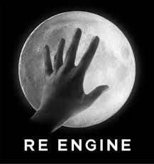

Most design project managers would see firstly what the competition in the field is using and use that. For example in the designing of gaming, most companies are using the Unreal engine (in the most recent version being Unreal engine 4) for their products. [5] Although many would stick with that and there is nothing wrong with that, in fact ‘Big’ companies will only stick with one type of system. Only modifying or updating it so they can get the best out of it against the competition. But Other companies have thought out of the box and decided to ‘create’ their own operating system which will suit their needs. And become trend setters. Such as the japanese company Capcom (who recently changed their gaming engine with the RE engine with the RE2 remake) who recently used Unreal on their own projects before.

gamedesigning Is the fifth resource.